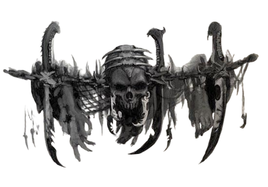

在黑暗灵族抵达并建立港口后不久，枢纽就开始作为贸易枢纽和劫掠基地运作。由于毗邻科洛努斯扩区和卡利西斯星区，它为奴隶贩子打开了全新的机遇之门：那些以往因网道残破而遥不可及、或过于危险而无法劫掠的世界，如今变得触手可及。阴影枢纽在奴隶的脊背上迅速膨胀壮大，财富也随之累积。尽管科摩罗的大多数黑暗灵族至少表面上都很鄙弃这座诅咒之地及其中的流亡者。但科洛努斯扩区的异形与尖啸漩涡的叛徒则没有这样的顾忌，他们发现枢纽是贸易和聚集的理想之地——这里远离帝国掌控、且对帝国爪牙充满敌视。萨莱恩欢迎这些派系进入她的城市，既是因为她看重他们带来的财富与影响力，也是因为他们为她提供的额外保护，防范那些试图从她手中夺走城市的人。不幸的是，对萨莱恩而言，最终将她赶下台的并非外部势力也非外来种族。最终，是她的伙伴扎尔加恩·库尔篡夺了她的权位，并在她来得及对他采取同样行动之前，将她放逐回网道之中。对枢纽的许多居民而言，这场权力更迭无关紧要，尤其是对奴隶们：执政的是哪位黑暗灵族，在他们眼中并无分别。
